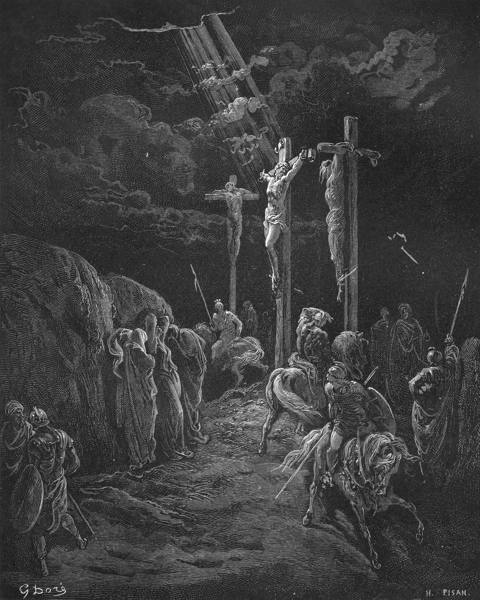
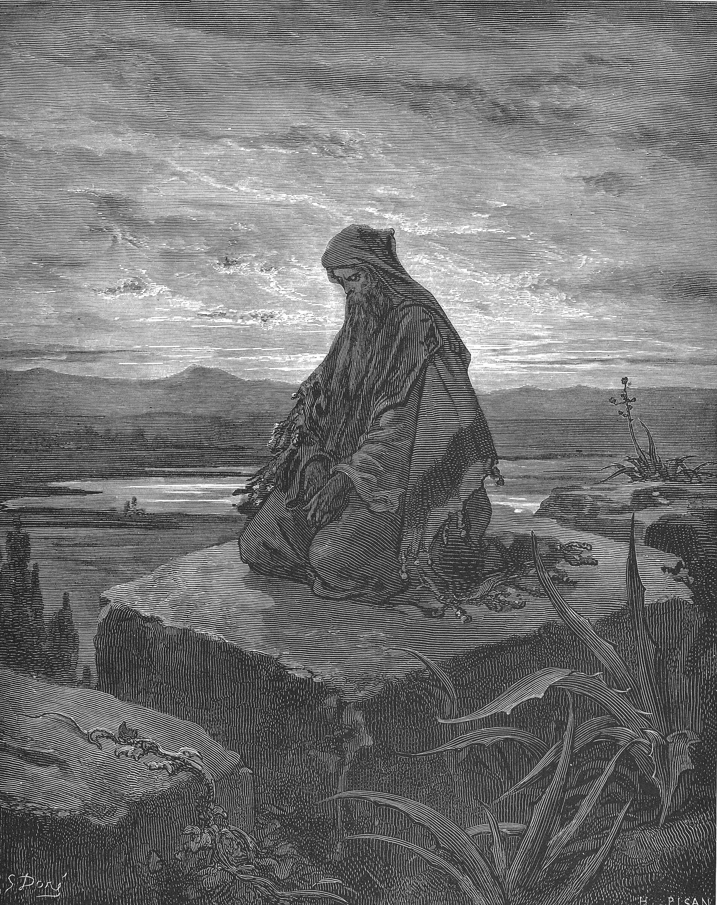

8–14 November 2026
John 3 · Romans 5 · 1 John 4 · 6 chapters, 4 notes, 3 connections
I spent most of this week in John 3, and kept being pulled back to one word: gave. Before anything is asked of us, something is given. By Friday the same thread had run through Romans 5 and 1 John 4, so this week’s notes are really about one thing.
We love because He first loved us.
1 John 4:19 · BSBI · John 3
For God so loved the world that He gave His one and only Son, that everyone who believes in Him shall not perish but have eternal life.
John 3:16 · BSBI have read this verse my whole life and never slowed down on the order of it. Loved, then gave, then believes. The believing comes third. Everything I do is a response to something already done.
For God did not send His Son into the world to condemn the world, but to save the world through Him.
John 3:17 · BSBHighlight · 1 John 4:10
not that we loved God, but that He loved us — the direction matters. It runs toward us first.II · Romans 5
But God proves His love for us in this: While we were still sinners, Christ died for us.
Romans 5:8 · BSB“While we were still.” Not after we had cleaned up. The same order as John 3: the gift lands in the middle of the mess, not at the end of it. I linked this one back to John 3:16, and it is hard to read either without the other now.
This week’s connections
The verses this week linked, drawn across the whole Bible, Genesis to Revelation, as in the app.

III · 1 John 4
And love consists in this: not that we loved God, but that He loved us and sent His Son as the atoning sacrifice for our sins.
1 John 4:10 · BSBSix words in verse 19 settle the whole week. The “because” carries all of it. My love for God, for my family, for the people who are hard to love, is not the source. It is the echo.
If you take one thing from this week, take the order: loved, given, believed, and only then, loving. It is a relief to find myself third on that list.
For your notes
Where in your own week did the giving come before the asking? Write it down, and link it to the verse it reminds you of.
Open 1 John 4 in Bible LanternYou asked for this at biblelantern.com. One email a week, read and approved by Ji before it is sent.
Unsubscribe · Privacy · Read on the web
Scripture quotations are from the Berean Standard Bible, public domain. Engravings by Gustave Doré (1866), public domain. The notes are the writer’s own and are not part of the text of Scripture.
Mock-up: the reflections are sample text in the devotional’s voice, not Ji’s notes. The verses are the app’s BSB text, word for word.